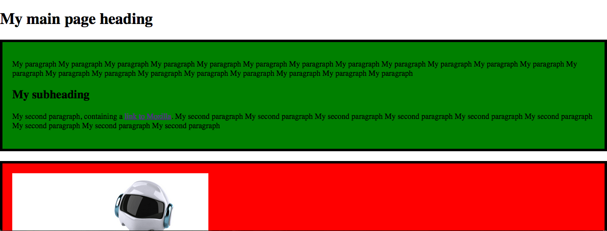

Hello again! I hope you've been having fun the last couple of weeks playing around with HTML. This week we are going to leave it behind and move on to looking at CSS instead. CSS is the language we use to style our HTML content, whether we want to change colours, make text bigger, change the size or positioning of HTML elements, or whatever else we want to do to make things look cool.
Note: You can find a useful reference to the most common CSS features you'll want to use: see the CSS Cheatsheet.
CSS basic anatomy
Let's revisit the basics of CSS again, in a bit more detail this time.
- First of all, open your JSBin CSS pane. This is where we will write our CSS.
- Inside the
styleelement, write the following bit of CSS:
p {
color: blue;
}Your paragraphs should now be a funky blue colour! To explain what the different parts are in more detail:
- The whole thing is called a CSS ruleset (although most people just say rule.)
- The
pis the selector. This selects what HTML elements on the page should be styled by the CSS rule. In this case, we are telling it to select allpelements on the page. - The
color: blue;is called a declaration. You are declaring that you want to give a certain property of the HTML elements selected by the rule a certain value.coloris the property you are setting a new value for.blueis the value you are giving that property.
- the declarations of your rule have to be wrapped in curly braces (
{ ... }).
Note: Notice the American spelling of "color". When web programming languages were invented, the agreement was that we would all use American spellings to avoid confusion and make things easier.
You can add as many declarations as you want to in each CSS rule that you write. You just need to remember to put a colon (:) in between each property and its value, and separate each declaration with a semi-colon (;). Try adding a few more of these to your CSS rule:
p {
color: blue;
font-size: 30px;
background-color: yellow;
border-radius: 10px;
border: 2px solid green;
padding: 10px;
}The finished result should look something like the below image

CSS doesn't care about how much whitespace you put around the different bits. So
p {color:blue;}Actually has exactly the same effect as
p {
color: blue;
}It is all down to what style you prefer to write. I prefer the second one, as it is easier to read what is going on.
Different types of selector
We'll look at a couple of different types of selector in this course. So far you have only seen element selectors, for example p and h1, which select all of the elements of that type on an HTML page. The other two main selectors you'll come across are called class and id selectors, which select HTML elements that have certain id or class attribute values.
Note: The difference between classes and ids is that you can have as many HTML elements as you want with the same class value, but you can only have a single element with each id value. ids are unique identifiers, meaning there can be only one on each HTML page.
Let's look at an example. Say we want to give the two <div> elements on our page two different background colours. We couldn't do this with a div element selector, as it would select both <div> elements at once. Instead we can add classes to our divs and select those.
First, go to your HTML pane, and add class attributes to your opening <div> tags, like this:
<div class="intro">Make the class names meaningful, so they describe the content in the elements.
Now you can select these elements using a class selector, which is just the class name you want to select with a dot in front of it. Try this now, replacing my class names with your own:
.intro {
background-color: green;
}
.gallery {
background-color: red;
}Keep these CSS rules as they are for now; we'll add to them soon.
The box model
When an element is laid out on a web page, the web browser draws it on the screen according to a specific model called the box model.

So when you put an element on a page, it has four things that affect the space it takes up.
- The content: This is the bit on the inside of the element, which is usually our text (or might be images). The width and height of this can be affected by the
widthandheightproperties. By default the element will be as long as it needs to be to contain the content. Let's try altering the width and adding a height. If you set a height that is shorter than the content, the content will overflow the element. - The padding: This is the area immediately surrounding the content. You can control the padding using the
paddingproperty (andpadding-top, etc.) - The border: This goes around the padding; you've seen this before. Lets have a bit of a play with changing the border values.
- The margin: This is the space around the border; you can set this with the
marginproperty (andmargin-top, etc.) This creates some space around the element.
Note: When you set a width on an element, that is just the width of the content. The total width the element takes up is the content width, plus the left and right margin, border and padding. For example, if we had a 200px wide div, and a margin, padding and border of 10px each, the total width would be:
200px + (10 x 2) + (10 x 2) + (10 x 2) = 260pxWith that out the way, let's go and add some spacing to our projects! Let's try adding some padding to both divs — for example padding: 20px;. A little bit of space around your text makes the content sit much nicer. Add this inside the rulesets you created earlier.
Now try adding a bit of margin to your divs. You could add margin to all sides — for example margin: 20px; — but I'd recommend after some experimentation just sticking to putting some margin on the bottom of the first div — margin-bottom: 20px;.
Finally, let's put some borders on both divs — for example border: 5px solid black. Here we are setting three values separately — the width of the border, the style (try dotted, dashed, or double instead of solid) and the colour. Try changing some values.
Browser defaults
All browsers set some CSS property values on certain HTML elements, before you've done anything yourself. If they didn't, unstyled HTML would look like a complete mess: this is a way to ensure that unstyled HTML is at least basically readable in browsers, even if it isn't that pretty. But this isn't helpful all the time. One really annoying thing when trying to lay out web pages is the default margin you get on the body element. One of the first things I do to any web page is get rid of this default.
This can be done with the following CSS — add this to your CSS pane now:
body {
margin: 0;
}Try adding this to your current example's CSS, and note how this causes the small gap between our div and the edge of the window to disappear.
Width and height
The CSS width and height properties can be used to set the width and height of elements. This generally means the width or height or the element you set the width or height on's parent element, meaning the element it sits inside. Let's look a use case to explain this better.
First, look at the live preview version of your page by pressing the Live preview button in the top left corner of the Output pane:
You'll see that the current display looks a bit silly with the content stretched so wide.
Let's control this with width. Add the following declaration into the existing body ruleset: width: 700px;. Your live preview should now look like this (you'll need to refresh the view first).

Centering things
It would look better if the content were centered in the browser window. You can center an element inside its parent using margin: 0 auto;. Don't worry about exactly what this means for now; add it inside the existing body rule, replacing the margin: 0; declaration.
Extra credit
It might also look cool to add margin: 0 auto to your image, and your video if you have one. What about a border for your images/videos as well? Be warned that if you are trying to center an image, you'll also need to set it to display: block. A suitable rule might look like this:
img,iframe {
margin: 0 auto;
display: block;
border: 5px solid black;
}